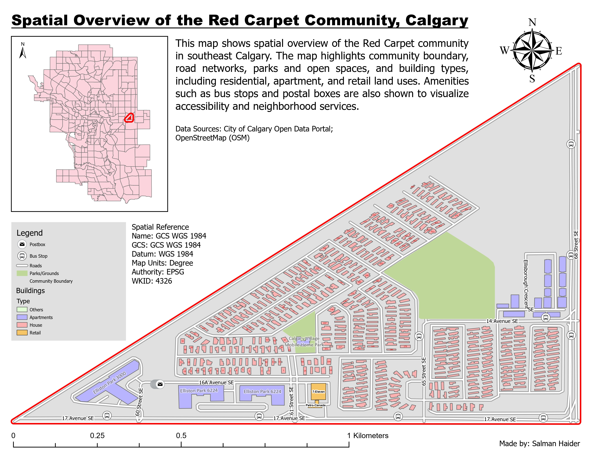

What this map was made for
The purpose of this map was to create a clear neighbourhood-level overview of Red Carpet in southeast Calgary. I wanted the map to show the community boundary and the main features inside it, including roads, buildings, parks, bus stops, postboxes, and local services.
This type of map is useful when someone wants to understand the structure of a community at a local scale. It shows how the road network connects different parts of the neighbourhood, where open spaces are located, and how residential, apartment, and retail buildings are distributed.
How I used and improved OpenStreetMap data
A major part of this project was creating and improving spatial data in OpenStreetMap. I focused on the Red Carpet community and updated features such as buildings, addresses, amenities, and local points of interest. These edits helped make the community data more complete before bringing it into a GIS environment.
The mapping work included edits to features such as Elliston Park buildings, Canada Post mailboxes, 7-Eleven, Petro-Canada, Calgary Village Mobile Home Park, and several address records. I then used the edited OSM data as part of the GIS workflow for building the final 2D cartographic layout.
How I moved the data into GIS
After editing the data, I extracted OpenStreetMap features and prepared them for use in ArcGIS Pro. The workflow involved downloading or querying OSM data, converting it into GIS-ready formats, and organizing the layers into a file geodatabase. This included layers for buildings, bus stops, community boundary, parks and grounds, postboxes, and roads.
This step was important because a clean geodatabase makes the final map easier to manage. Instead of working with loose files, I organized the layers into a structured GIS workspace so they could be clipped, symbolized, labeled, and used for both 2D mapping and 3D scene preparation.
How I designed the community overview
The map uses the Red Carpet community boundary as the main visual frame. I used a bright red outline so the community extent is immediately visible. Roads were shown in light gray and white so they support navigation without overpowering the map. Parks and open spaces were shown in green because that color is easy to associate with open land and recreation.
Buildings were separated into categories such as houses, apartments, retail, and others. This helps the viewer understand land use patterns inside the community. I used soft colors for building categories so the map remained readable even though there are many small building footprints.
How the layout supports interpretation
I included an inset map of Calgary to show where Red Carpet is located within the city. This helps viewers understand the broader urban context before looking at the detailed community map. The legend explains the road, park, building, bus stop, postbox, and community boundary symbols.
I also included spatial reference information because this project involved data creation, editing, and GIS processing. The scale bar, north arrow, title, data sources, and legend make the layout work as a complete cartographic product rather than only a screenshot of GIS layers.
What the map shows
The map shows that Red Carpet has a long and narrow community shape, with 17 Avenue SE forming an important edge along the south side and 68 Street SE along the east side. The community contains a mix of residential housing, apartment buildings, retail/service locations, parks, and mobile home areas.
The building pattern also shows how different types of development are arranged in the neighbourhood. Residential housing dominates much of the map, while apartment and retail features are concentrated in more specific areas. Bus stops and postboxes help show small but important neighbourhood services and accessibility points.
What I learned from this map
This project helped me understand how important data creation is in GIS. A map is only as useful as the data behind it, and sometimes the data needs to be edited or improved before it can support analysis or cartography. Working with OpenStreetMap gave me hands-on experience with volunteered geographic information and real-world feature editing.
I also learned how an ETL workflow connects different tools together. The project moved from OSM editing, to data extraction, to QGIS conversion, to ArcGIS Pro mapping, to geodatabase organization, and finally to 2D and 3D GIS outputs. This made it a useful example of practical urban GIS work from data creation to final map design.